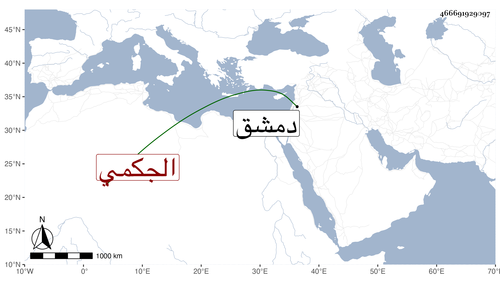

0902Sakhawi.DawLamic.ITO20230111-ara1.EIS1600.466691929097
Biography ID: 466691929097
1005
ابنة ابرك الجكمي أحد أمراء دمشق الطبلخانات ، وأمها خوند الأحمدية جهة الظاهر خشقدم . تزوجها الزين عبد الرحيم بن العيني فاستولدها ابنه الشهاب أحمد ومات أبوه فرباه زوج جدته الظاهر المشار إليه ، وماتت هي في يوم السبت رابع ذي القعدة سنة ست وستين وحضر السلطان الصلاة عليها بالقلعة ثم دفنت بتربته .
